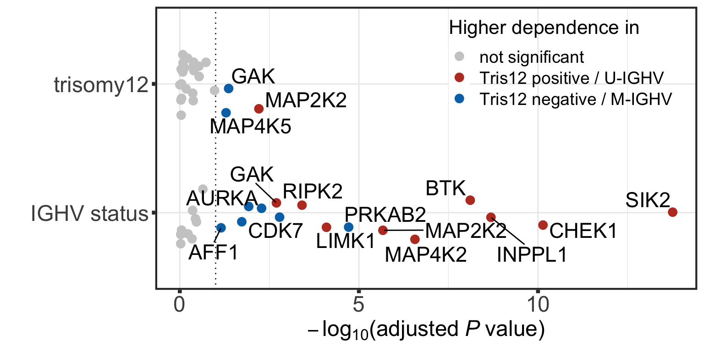

Pre-processing GDSC drug screen datasets
Junyan Lu
2021-10-05
Last updated: 2021-12-24
Checks: 6 1
Knit directory: DepInfeR/analysis/
This reproducible R Markdown analysis was created with workflowr (version 1.7.0). The Checks tab describes the reproducibility checks that were applied when the results were created. The Past versions tab lists the development history.
The R Markdown is untracked by Git. To know which version of the R Markdown file created these results, you’ll want to first commit it to the Git repo. If you’re still working on the analysis, you can ignore this warning. When you’re finished, you can run wflow_publish to commit the R Markdown file and build the HTML.
Great job! The global environment was empty. Objects defined in the global environment can affect the analysis in your R Markdown file in unknown ways. For reproduciblity it’s best to always run the code in an empty environment.
The command set.seed(20211005) was run prior to running the code in the R Markdown file. Setting a seed ensures that any results that rely on randomness, e.g. subsampling or permutations, are reproducible.
Great job! Recording the operating system, R version, and package versions is critical for reproducibility.
Nice! There were no cached chunks for this analysis, so you can be confident that you successfully produced the results during this run.
Great job! Using relative paths to the files within your workflowr project makes it easier to run your code on other machines.
Great! You are using Git for version control. Tracking code development and connecting the code version to the results is critical for reproducibility.
The results in this page were generated with repository version 43be8a7. See the Past versions tab to see a history of the changes made to the R Markdown and HTML files.
Note that you need to be careful to ensure that all relevant files for the analysis have been committed to Git prior to generating the results (you can use wflow_publish or wflow_git_commit). workflowr only checks the R Markdown file, but you know if there are other scripts or data files that it depends on. Below is the status of the Git repository when the results were generated:
Ignored files:
Ignored: .DS_Store
Ignored: .Rhistory
Ignored: .Rproj.user/
Ignored: analysis/.DS_Store
Ignored: analysis/.Rhistory
Ignored: analysis/analysis_RNAseq_cache/
Ignored: data/.DS_Store
Ignored: output/.DS_Store
Untracked files:
Untracked: analysis/analysis_EMBL2016.Rmd
Untracked: analysis/analysis_GDSC.Rmd
Untracked: analysis/analysis_RNAseq.Rmd
Untracked: analysis/analysis_beatAML.Rmd
Untracked: analysis/process_EMBL2016.Rmd
Untracked: analysis/process_GDSC.Rmd
Untracked: analysis/process_beatAML.Rmd
Untracked: analysis/process_kinobeads.Rmd
Untracked: code/utils.R
Untracked: data/BeatAML/
Untracked: data/EMBL2016/
Untracked: data/GDSC/
Untracked: data/Kinobeads/
Untracked: data/RNAseq/
Untracked: manuscript/
Untracked: output/BeatAML_result.RData
Untracked: output/EMBL_result.RData
Untracked: output/EMBL_resultSub.RData
Untracked: output/GDSC_result.RData
Untracked: output/allTargets.rds
Untracked: output/inputs_BeatAML.RData
Untracked: output/inputs_EMBL.RData
Untracked: output/inputs_GDSC.RData
Unstaged changes:
Modified: README.md
Modified: _workflowr.yml
Modified: analysis/_site.yml
Deleted: analysis/about.Rmd
Modified: analysis/index.Rmd
Deleted: analysis/license.Rmd
Deleted: output/README.md
Note that any generated files, e.g. HTML, png, CSS, etc., are not included in this status report because it is ok for generated content to have uncommitted changes.
There are no past versions. Publish this analysis with wflow_publish() to start tracking its development.
Load packages
Packages
library(depInfeR)
library(RColorBrewer)
library(pheatmap)
library(ggbeeswarm)
library(ggrepel)
library(fpc)
library(igraph)
library(factoextra)
library(tidyverse)
source("../code/utils.R")
knitr::opts_chunk$set(dev=c("png","pdf"))Load pre-processed datasets
load("../output/inputs_EMBL.RData")Dimensions of input matrices
Drug-target
dim(tarMat_EMBL)[1] 85 136Drug-sample (viability matrix)
dim(viabMat_EMBL)[1] 85 131Multivariant model for protein dependence prediction
Perform multivariant LASSO regression based on a drug-protein affinity matrix and a drug response matrix.
This chunk can take a long time to run. Therefore we will save the result for later use to save time.
#column wise scale of the viability matrix, to keep the drug effect rank
viabMat.scale <- t(mscale(t(viabMat_EMBL)))
#run lasso regression
result <- runLASSOregression(TargetMatrix = tarMat_EMBL , ResponseMatrix = viabMat.scale, seed = 333)
#remove targets that were never selected
useTar <- rowSums(result$coefMat) != 0
result$coefMat <- result$coefMat[useTar,]
#save intermediate results
save(result, file = "../output/EMBL_result.RData")Load the saved result
load("../output/EMBL_result.RData")Number of selected targets
nrow(result$coefMat)[1] 24Make genomic patient annotation
Prepare column annotations
#genetic background annotation
colAnno <- dplyr::select(annotation_EMBL, Patient.ID,
diagnosis, IGHV.status,
Methylation_Cluster,
trisomy12, TP53, del11q) %>%
data.frame() %>% remove_rownames() %>%
column_to_rownames("Patient.ID")
colAnno_cll <- dplyr::filter(colAnno, diagnosis == "CLL")
#color for annotation
annoColor <- list(treatment = c(Yes = "black", No = "grey80"),
IGHV.status = c(M = "black",U="grey80"),
Methylation_Cluster = c(HP = "darkblue", IP = "blue", LP = "lightblue"),
diagnosis = c(CLL = "#BC3C29FF", MCL = "#E18727FF",`T-PLL`="#20854EFF"))
for (name in setdiff(colnames(colAnno),names(annoColor))) {
annoColor[[name]] <- c(`1` = "black",`0` = "grey80")
}Heatmap plot of protein dependence matrix
plotTab <- result$coefMat
#normalization for different protein dependencies (over samples) without changing the coefficient sign
plotTab_scaled <- scale(t(plotTab), center = FALSE, scale = TRUE)
plotTab <- t(plotTab_scaled)
pheatmap(plotTab,
color=colorRampPalette(rev(brewer.pal(n = 7, name ="RdBu")), bias= 1.2)(100),
annotation_col = colAnno,
annotation_colors = annoColor,
clustering_method = "ward.D2", scale = "none",
show_colnames = TRUE, main = "row scaled", fontsize = 9, fontsize_row = 10, fontsize_col = 7)BTK importance among CLL, MCL and T-PLL
coefMatAll <- result$coefMat
plotTab <- tibble(patID = colnames(coefMatAll),
coef = coefMatAll["BTK",]) %>%
mutate(diagnosis = colAnno[patID,]$diagnosis) %>%
group_by(diagnosis) %>% mutate(n=length(patID)) %>%
mutate(diagnosis = sprintf("%s (n=%s)", diagnosis, n))
g <- ggplot(na.omit(plotTab), aes(x=diagnosis,y=coef)) +
geom_violin(aes(fill = diagnosis)) + scale_fill_manual(values=c("#46B8DAFF","#D43F3AFF","#EEA236FF")) + geom_beeswarm() +
xlab("") + ylab("Protein dependence") + ggtitle(sprintf("BTK ~ diagnosis")) +
theme_custom + theme(legend.position = "none")
gAssessment of results
PCA
PCA plot of protein dependence matrix of CLL samples colored by IGHV status
coefMat_cll <- result$coefMat[,rownames(colAnno_cll)]
res_pca_imp_kd_cll <- prcomp(t(coefMat_cll), scale = T, center = TRUE)
#fviz_eig(res_pca_imp_kd_cll)
#PCA plot for IGHV mutation status
fviz_pca_ind(res_pca_imp_kd_cll,
geom = c("point"),
pointsize = 2,
repel = TRUE,
xlab = "PC1",
ylab = "PC2",
habillage = colAnno_cll$IGHV.status,
title = "Protein dependence - PCA - Lasso kd - CLL") +
theme(axis.text = element_text(size = 12),
axis.title = element_text(size = 14),
plot.title = element_text(size = 12, hjust = 0.5, face = "bold")) +
scale_color_manual(breaks=c("M","U"), values= c("#46B8DAFF","#D43F3AFF"), name = "IGHV") +
scale_shape(guide=FALSE)Warning: Removed 2 rows containing missing values (geom_point).Warning: Removed 1 rows containing missing values (geom_point).Warning: It is deprecated to specify `guide = FALSE` to remove a guide. Please
use `guide = "none"` instead.k-means clustering
k-means clustering of protein dependence matrix with IGHV status annotation
colList_mut <- c("#BC3C29FF","#0072B5FF")
kclus_tab <- merge(colAnno_cll[,1:2], t(coefMat_cll), all = T, by = 'row.names')
kclus_tab <- remove_rownames(kclus_tab) %>% column_to_rownames("Row.names")
kclus_tab <- na.omit(kclus_tab)
km_res_imp <- eclust(kclus_tab[,-c(1:2)], "kmeans", k = 2, nstart = 50, graph = FALSE, stand = T)
pcTar <- fviz_cluster(km_res_imp, kclus_tab[,-c(1:2)], geom = c("point")) +
geom_point(aes(colour= kclus_tab$IGHV.status)) +
ggtitle("k-means clustering of \nprotein dependence matrix") +
scale_shape(guide=FALSE) +
scale_color_manual(breaks=c("M","U"), values= c("#0072B5FF", "#BC3C29FF", "#BC3C29FF","#0072B5FF"), name = "IGHV") +
scale_fill_manual(values = colList_mut) + xlab("PC1") + ylab("PC2") +
theme_custom + theme(plot.title = element_text(size=20, face="bold")) + xlim(-6,6) + ylim(-8,8)
pcTarWarning: It is deprecated to specify `guide = FALSE` to remove a guide. Please
use `guide = "none"` instead.k-means clustering of drug response matrix with IGHV status annotation
kclus_tab_drug <- merge(colAnno_cll[,1:2], t(viabMat_EMBL), all=T, by='row.names')
kclus_tab_drug <- remove_rownames(kclus_tab_drug) %>% column_to_rownames("Row.names")
kclus_tab_drug <- na.omit(kclus_tab_drug)
km_res_drug <- eclust(kclus_tab_drug[,-c(1:2)], "kmeans", k = 2, nstart = 50, graph = FALSE, stand = T)
pcDrug <- fviz_cluster(km_res_drug, kclus_tab_drug[,-c(1:2)], geom = c("point")) +
geom_point(aes(colour= kclus_tab_drug$IGHV.status)) +
ggtitle("k-means clustering of \ndrug response matrix") +
scale_shape(guide=FALSE) + scale_color_manual(breaks=c("M","U"), values= c("#0072B5FF", "#BC3C29FF", "#BC3C29FF","#0072B5FF"), name = "IGHV") +
scale_fill_manual(values = colList_mut) + xlab("PC1") + ylab("PC2") +
theme_custom + theme(plot.title = element_text(size=20, face="bold")) +
scale_x_reverse(breaks = c(12, 6, 0, -6, -12), limits=c(12,-12), labels = c(-12,-6,0,6,12)) + #mirro x-axis for the sake of visualization
ylim(-12,12)
pcDrugWarning: Removed 4 rows containing non-finite values (stat_chull).Warning: Removed 4 rows containing non-finite values (stat_mean).Warning: Removed 4 rows containing missing values (geom_point).
Warning: Removed 4 rows containing missing values (geom_point).Warning: It is deprecated to specify `guide = FALSE` to remove a guide. Please
use `guide = "none"` instead.External cluster assessment (based on k-means results) - IGHV status - Rand Index
An external cluster analysis evaluates the clustering quality by comparing the found cluster belonging to the known ground-truth. The Rand Index is a good measure to evaluate how many datapoints were clustered correctly when comparing the found clusters to the known ground truth. The Rand Index ranges between 0 and 1 and a higher index corresponds to more datapoints being clustered in their correct groups.
# function to calculate cross tabulation between k-means clusters and ground truth
externalClust <- function(clusterTab, kmeansResult, header) {
#calculation
crossTab <- table(clusterTab$IGHV.status, kmeansResult$cluster)
status <- as.numeric(factor(clusterTab$IGHV.status))
imp_stats <- cluster.stats(d = dist(clusterTab[,-c(1:2)]),
status, kmeansResult$cluster)
randScore <- round(imp_stats$corrected.rand, 3)
#create table
crossTab <- data.frame(IGHV = rownames(crossTab), Cluster1 = c(crossTab[,1]), Cluster2 = c(crossTab[,2])) %>%
gt::gt(rowname_col = "rowname") %>%
gt::tab_header(title = header, subtitle = paste("Rand Index is", randScore))
return(crossTab)
}
# target importance
externalClust(kclus_tab, km_res_imp , header = "Cross tabulation protein dependence")| Cross tabulation protein dependence | ||
|---|---|---|
| Rand Index is 0.623 | ||
| IGHV | Cluster1 | Cluster2 |
| M | 55 | 5 |
| U | 7 | 48 |
# drug screen
externalClust(kclus_tab_drug, km_res_drug , header = "Cross tabulation drug screen")| Cross tabulation drug screen | ||
|---|---|---|
| Rand Index is 0.146 | ||
| IGHV | Cluster1 | Cluster2 |
| M | 47 | 13 |
| U | 22 | 33 |
Differential dependence on proteins associated with genotype
Prepare genomic background table
patAnno <- dplyr::select(annotation_EMBL, -sex, -treatment, -date.of.first.treatment)Association test between protein dependence and genetic background
geneBack <- patAnno %>% data.frame() %>% remove_rownames() %>%
column_to_rownames("Patient.ID")
testRes_cll <- diffImportance(coefMat_cll, geneBack)Visualization of identified associations
#define color
colList <- c(`not significant` = "grey80", "Tris12 positive / U-IGHV" = "#BC3C29FF", "Tris12 negative / M-IGHV" = "#0072B5FF")
pos = position_jitter(width = 0.25, seed = 10)
plotTab <- testRes_cll %>% dplyr::filter(mutName %in% c("IGHV.status", "trisomy12")) %>% mutate(type = ifelse(p.adj > 0.1, "not significant",
ifelse(FC >0, "Tris12 positive / U-IGHV","Tris12 negative / M-IGHV"))) %>%
mutate(varName = ifelse(type == "not significant","",targetName))
plotTab <- plotTab %>% dplyr::filter(mutName %in% plotTab$mutName[1:19]) %>%
mutate(mutName = str_replace(mutName,"[.]"," "))
p <- ggplot(data=plotTab, aes(x= mutName, y=-log10(p.adj),
col=type, label = varName))+
geom_hline(yintercept = -log10(0.1), linetype="dotted", color = "grey20") +
geom_point(size=3, position = pos) +
geom_text_repel(position = pos, color = "black", size= 6, force = 3) +
ylab(expression(-log[10]*'('*adjusted~italic("P")~value*')')) + xlab("") +
scale_color_manual(values = colList) +
theme_custom +
#annotate(geom = "text", x = 0.5, y = -log10(0.1) - 0.25, label = "10% FDR", size=7, col = "grey20") +
coord_flip() + labs(col = "Higher dependence in") +
theme(legend.position = c(0.75,0.8),
legend.background = element_rect(fill = NA),
legend.text = element_text(size=14),
legend.title = element_text(size=16),
axis.title = element_text(size=18),
axis.text = element_text(size=18))
plot(p)Warning: ggrepel: 2 unlabeled data points (too many overlaps). Consider
increasing max.overlaps
#ggsave("test.pdf", height = 4, width = 8)Visualize significant associations using a heatmap
plotTab <- testRes_cll %>% dplyr::filter(mutName %in% c("IGHV.status", "trisomy12")) %>%
mutate(starSign = ifelse(p.adj <=0.1, "*", ""),
pSign = -log10(p)*sign(FC))
#subset for mutation with at least one significant associations
plotTar <- unique(filter(plotTab, p.adj <= 0.1)$targetName)
plotMut <- unique(filter(plotTab, p.adj <= 0.1)$mutName)
plotTab <- plotTab %>% dplyr::filter( targetName %in% plotTar , mutName %in% plotMut)
p <- ggplot(data=plotTab, aes(y=mutName, x = targetName, fill=pSign)) +
geom_tile(col = "black") + geom_text(aes(label = starSign), size=5, vjust=0.5) +
scale_fill_gradient2(low = "#BC3C29FF", high = "#0072B5FF", name = bquote(-log[10]*italic("P"))) +
theme_minimal() +
theme(panel.grid.major = element_blank(),
legend.text = element_text(size=14),
legend.title = element_text(size=16),
axis.title = element_text(size=18),
axis.text.y = element_text(size=18),
axis.text.x = element_text(size=18, angle = 90, vjust=.5, hjust=1)) +
ylab("Mutations") + xlab("Proteins")
p
Visualization of exemplary associations in beeswarm plots
pList <- plotDiffBox(testRes_cll, coefMat_cll, geneBack, fdrCut = 0.05)cowplot::plot_grid(pList$BTK_IGHV.status,
pList$SIK2_IGHV.status + theme(axis.title.y = element_blank()),
pList$INPPL1_IGHV.status + theme(axis.title.y = element_blank()),
pList$MAP2K2_trisomy12+theme(axis.title.y = element_blank()), nrow=1,
rel_widths = c(1.05,1,1,1))